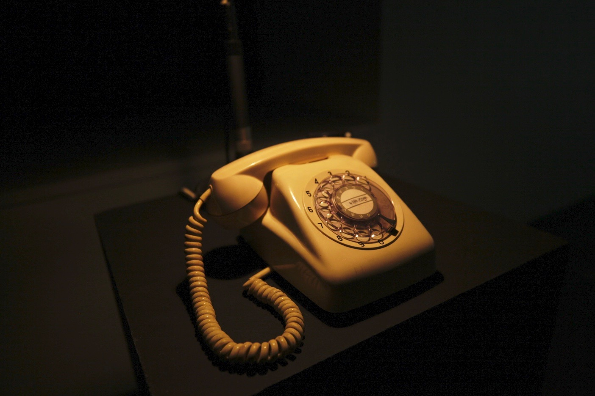
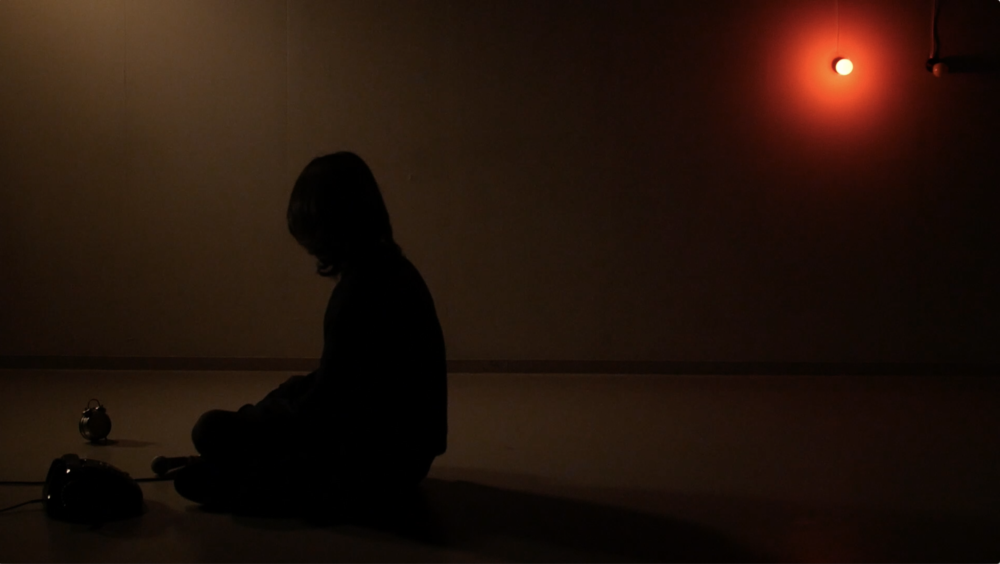

- 
- 

117
2021- | Mixed media
────────────────
映像体験における聴覚と視覚、反復されるメディア内の時間と実時間との間での同期と不一致をテーマにした実験映画的インスタレーション。モチーフとなったのは、もはや実用性を失い、忘れられつつあるNTTの電話時報サービス「117番」である。作者の扮する「時報男」は情報社会を生きる人間の青ざめたカリカチュアであり、機械的な時間を身体に内在し、接続と同期を永遠に繰り返す。
展示空間には壁面投影された映像、スピーカーからの音、少し離れた場所に旧式のアナログ電話機と、現在時刻を示す時計（電波時計）がある。映像には男が写っており、二種類の動作を行う。ひとつはマイクに向かって映像再生時の日付と時刻を喋ること。もうひとつは電話をかけること。「時報男」が電話をかけると、展示空間の実物の電話のベルが鳴る。もし観客が受話器を上げたら、男の声で、117番ふうの時報音声が聴こえる。男が読み上げる時刻は秒単位で時計とシンクロしているはずだ。